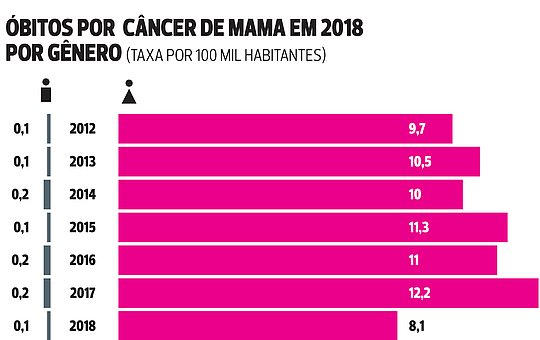
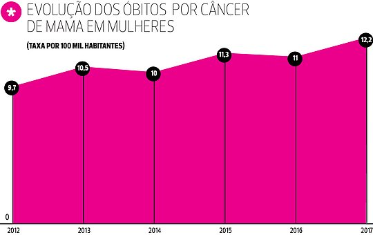
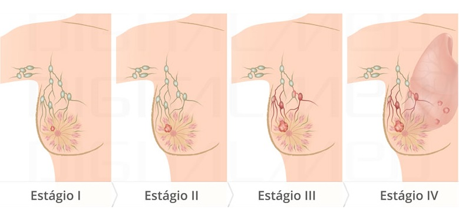

Câncer de Mama
O câncer de mama é um tumor maligno que se desenvolve na mama como consequência de alterações genéticas em algum conjunto de células da mama, que passam a se dividir descontroladamente. Ocorre o crescimento anormal das células mamárias, tanto do ducto mamário quanto dos glóbulos mamários. Esse é o tipo de câncer que mais acomete as mulheres em todo o mundo, sendo 1,38 milhões de novos casos e 458 mil mortes pela doença por ano, de acordo com a Organização Mundial de Saúde (OMS).
A proporção em homens e mulheres é de 1:100 - ou seja, para cada 100 mulheres com câncer de mama, um homem terá a doença. No Brasil, o Ministério da Saúde estima 52.680 casos novos em um ano, com um risco estimado de 52 casos a cada 100 mil mulheres. Segundo dados da Sociedade Brasileira de Mastologia, cerca de uma a cada 12 mulheres terão um tumor nas mamas até os 90 anos de idade.

Mortes de Mulheres por Câncer
Um estudo realizado durante 14 anos pela equipe médica do Hospital do Câncer de Barretos (SP) revelou que a taxa de mortalidade entre mulheres por câncer de mama e por câncer de colo de útero caiu 42,85% e 34,88%, respectivamente, devido ao diagnóstico precoce através de exames preventivos.
Contudo, o levantamento também apontou um aumento na detecção dos casos. Entre 2000 e 2014, os números de diagnósticos precoces e tardios também aumentaram. E entre 2012 e 2017, o número de óbitos sofreu um aumento, como mostrado no gráfico a baixo:

Causas e agravantes
O câncer de mama não tem somente uma causa. A idade é um dos mais importantes fatores de risco para a doença (cerca de quatro em cada cinco casos ocorrem após os 50 anos). Outros fatores que aumentam o risco da doença são:
Fatores ambientais e comportamentais:
- Obesidade e sobrepeso após a menopausa;
- Sedentarismo (não fazer exercícios);
- Consumo de bebida alcoólica;
- Exposição frequente a radiações ionizantes (Raios-X).
Fatores da história reprodutiva e hormonal:
- Primeira menstruação antes de 12 anos;
- Não ter tido filhos;
- Primeira gravidez após os 30 anos;
- Não ter amamentado;
- Parar de menstruar (menopausa) após os 55 anos;
- Uso de contraceptivos hormonais (estrogênio-progesterona);
- Ter feito reposição hormonal pós-menopausa, principalmente por mais de cinco anos.
Fatores genéticos e hereditários:
- História familiar de câncer de ovário;
- Casos de câncer de mama na família, principalmente antes dos 50 anos;
- História familiar de câncer de mama em homens;
- Alteração genética, especialmente nos genes BRCA1 e BRCA2.
Fatores ambientais e comportamentais:
Fatores da história reprodutiva e hormonal:
Fatores genéticos e hereditários:
Estágios:
O câncer de mama é dividido em quatro estágios, conforme a extensão da doença, que vão do 1 ao 4:
- Estágio 1: as células cancerosas ainda estão contidas nos ductos, por isso o problema é quase sempre curável.
- Estágio 2: tumor com menos de 2 cm, sem acometimento das glândulas linfáticas da axila
- Estágio 3: nódulo com mais de 5 cm que pode alcançar estruturas vizinhas, como músculo e pele, assim como as glândulas linfáticas. Mas ainda não há indício de que o câncer se espalhou pelo corpo
- Estágio 4: tumores de qualquer tamanho com metástases e, geralmente, há comprometimento das glândulas linfáticas.
